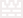

Back to Plants

Gloom-shroom
 150
150
 Heavy
Heavy
 Very Slow
Very Slow
 Normal
Level Acquired: Crazy Dave's Shop(Unlocked Level 4-5): $7500
"I've always enjoyed releasing heavy fumes," says Gloom Shroom. "I know a lot of people aren't cool with that. They say it's rude or that it smells bad. All I can say is, would you rather have your brain eaten by zombies?"
Plant Description
- The Gloom-shroom deals 80 damage per 1.9 seconds to any given target in its range, which is slower than a Gatling Pea. Its fumes can also hit every single target in its range, like the Fume-shroom, even if they have shields. As before, however, it does not have as much range (short range).
Strategies
- One tactic for Pool and Survival: Endless levels is to build a two by three area of Gloom-shrooms in the right-hand side of the pool, all covered by Pumpkins. These will handle pool zombies as well as those in rows two and five. This strategy has the side effect of leaving zombies in rows one and six mostly unscathed, so although these can generally be handled with Cob Cannon shells or consumable plants, such as the Jalapeno, a better idea is to put Gloom-shrooms in the fifth and sixth columns in rows two and five, plus using Fume-shrooms in rows one and six in the fourth and fifth columns.
- Another effective use is a row of Gloom-shrooms in rows two and four or five, with two Garlic at the very end. All land zombies will be moved to rows one and six and be annihilated. Snorkel Zombies and Dolphin Rider Zombies will make it necessary to add a two columns of Pumpkins on Lily Pads in the pool to allow time for the Gloom-shrooms to destroy them. This strategy is perfect for the mini-game Last Stand, since it can handle all of the zombies encountered. Their effectiveness is hampered by their short range, which makes them vulnerable to Gargantuars, Zombonis, and Catapult Zombies when planted on land, which will cause them to be smashed if said zombies reach it.